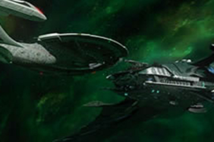
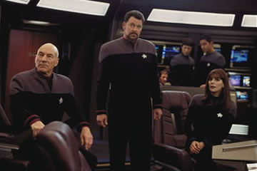
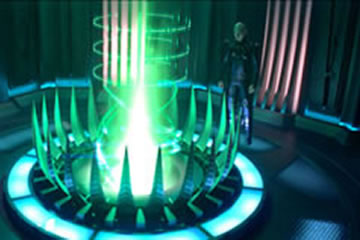

|

Sem
Jornada no ttulo. Ainda bem
Por
Carlos Santos
Aps finalmente
assistir ao esperado Nmesis, sa do cinema
tentando decidir se este era melhor ou pior do que Insurreio,
at finalmente perceber (no demorou tanto assim) que isto no
fazia a menor diferena. Insurreio era ruim e Nmesis
ruim e ponto, e deste prisma, saber qual o pior
irrelevante.
A aventura comea com uma homenagem ao casal Troi e Riker,
j num tom pastelo, recheada de piadinhas idiotas e prossegue
com a USS Enterprise, nave capitnia da Federao sendo
utilizada para levar o casal e seus padrinhos para a cerimnia em
Betazed (s faltaram as latas amarradas na traseira da nave).

Durante a viagem, Worf
(que est a bordo sem ningum explicar por que) informa que os
sensores da nave rastrearam um fluxo positrnico (maneiro,
no ?) que faz com Picard, Data e prprio Worf acabem em um
planeta desrtico catando pedaos de andride enquanto o Klingon
macho tem faniquitos. Incrvel que ningum faz nenhuma
meno a Lore, e mais tarde descobre-se que o playmobil de rob
era um prottipo do Data, o B-4. Fascinante.
Se no bastasse o jipe ridculo do Picard, dirigindo igual a um
alucinado, temos ainda a apario do povo da areia que
aparece s para o Worf praticar tiro ao alvo, enquanto Data usa
um inacreditvel controle remoto para guiar a nave auxiliar que
trouxe o grupo de forma a permitir uma sensacional fuga na ltima
hora"(TM).
Neste meio tempo, um inacreditvel clone do Picard lidera um
grupo da Nosferatus Romulanos, os Remans em uma
insurreio contra o poder estabelecido. Estes
Remans uma casta considerada inferior (e da qual ningum
nunca ouviu falar antes), apesar de ser usada como mo de obra
escrava segundo o que se v em Nmesis, consegue
construir uma nave absurdamente superior s Aves de Guerra
Romulanas bem debaixo do nariz destes, e ainda uma super arma.
Nosso implacvel vilo, o Shinzon (Tom Hardy) d um fim em todo
o senado Romulano de uma vez s e manda uma mensagem para a
Federao dizendo que quer negociar a paz.

Mas o que ser que o
malvado clone (???) de Picard realmente pretende ? Ora, destruir a
Terra, no melhor estilo Marvim, o Marciano.
A agora almirante Janeway manda a Enterprise para l, obviamente
por que ela a nave mais prxima da Zona Neutra, ora pois,
pois. Inclusive deve ser o melhor caminho para Betazed mesmo, no
?
Isto tudo acontece em menos de dez minutos, e de repente o filme pra.
D uma travada geral e comea a avanar em slow-motion,
esticando a trama com uma srie de situaes
pr-fabricadas sem o menor compromisso com que elas fizessem
algum sentido quando juntas.
Ao longo do filme, o espectador se depara com muitos outros
equvocos, mas tanta coisa errada que nem vale a pena
continuar lembrando. Nmesis um remendo, uma coleo
de idias recicladas que foram amontoadas sem nenhuma cola e
usadas como roteiro. Este efeito amplificado pela espantosa
mediocridade de Tom Hardy, pelas atuaes pfias do atores
regulares e pela lamentvel direo de Stuart Baird, que no
sabe o que Jornada nas Estrelas como acho que no sabe
o que cinema. A fotografia e a iluminao do filme so
totalmente equivocadas, fazendo com que as cenas de Worf, Data e
Picard no planeta do povo da areia ficassem com jeito de velhas e
todo o resto escuro demais, lembrando Jornada V, que
tambm sofreu deste problema.

Juntam-se a isto
trek-bobagens como o arma que desintegra matria orgnica de
forma sub-atmica e os j citados fluxos positrnicos, uma nave
Remana bizarra que para disparar parece um transformer, a
tentativa de fazer do Picard um heri de ao, coisa que h
tempos j se sabe que no funciona, um andride autista e a
forma estpida como Data morreu, enfim, tanta coisa que nem d
para listar sem ficar chato.
O pior de tudo que ao chegar ao fim do filme, voc se pergunta
por que Shinzon simplesmente no emparelhou com a Enterprise a
camuflada, transportou o Picard, faz a transfuso que ele dizia
precisar e depois seguiu para a Terra com toda a tranqilidade do
mundo? No h resposta plausvel para isto.
Acho agora que bem apropriado que o titulo do filme no
carregue o nome Jornada nas Estrelas, pois de Jornada
ele no tem nada.
|